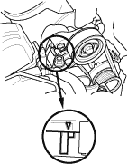
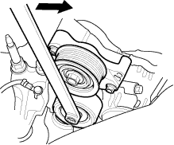
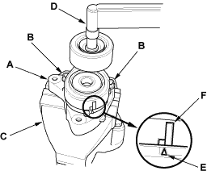

- Check whether there is a change in the position of the auto-tensioner indicator before starting the engine and after starting the engine. If there is a change in the position, replace the auto-tensioner.

- Check for abnormal noise from the tensioner pulley. If abnormal noise is heard, replace the tensioner pulley.
- Remove the drive belt (see page 4-25).
- Move the auto-tensioner within its limit with the belt tension release tool in the direction shown. Check that the tensioner moves smoothly and without any abnormal noise. If the tensioner does not move smoothly or there is abnormal noise, replace the auto-tensioner.

- Remove the auto-tensioner (see page 4-27).
- Install the tensioner pulley.
- Clamp the auto-tensioner (A) by using two 8 mm bolts (B) and a vice (C) as shown. Do not clamp the auto-tensioner itself.

- Set the torque wrench (D) on the pulley bolt.
- Align the indicator (E) on the tensioner base with centre mark (F) on the tensioner arm by using the torque wrench, and measure the torque. If the torque value is out of specification, replace the auto-tensioner.
NOTE: If the indicator exceeds the centre mark, recheck the torque.
26.5 - 36.3 Nm (2.7 - 3.7 kg/m, 19.5 - 26.8 lbf/ft)